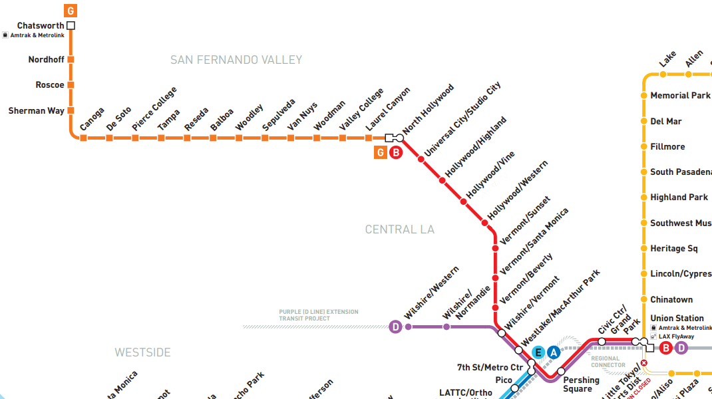
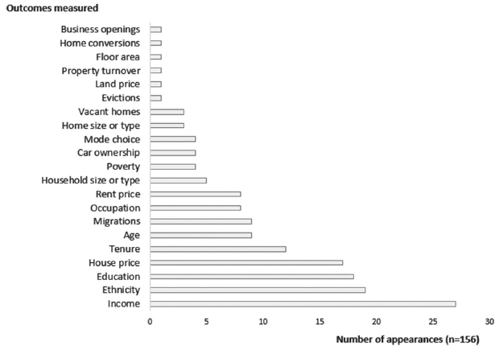
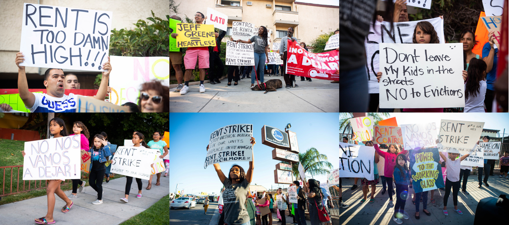
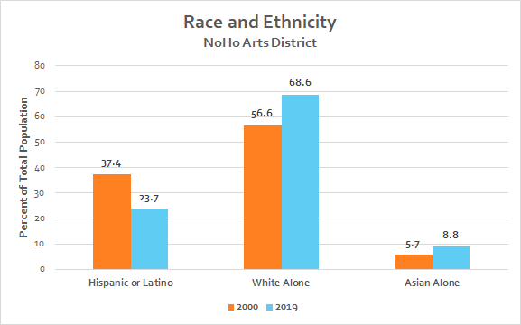
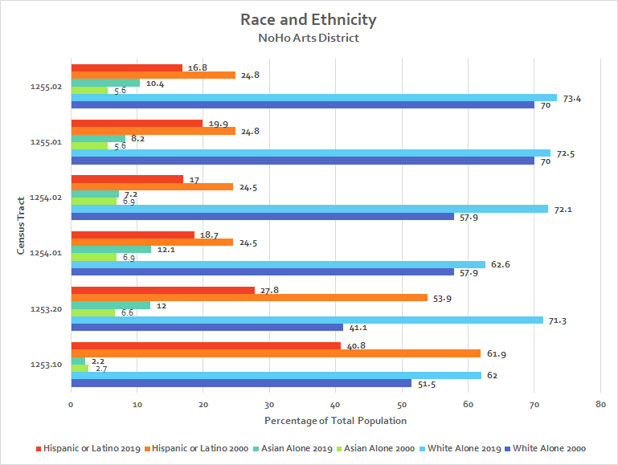
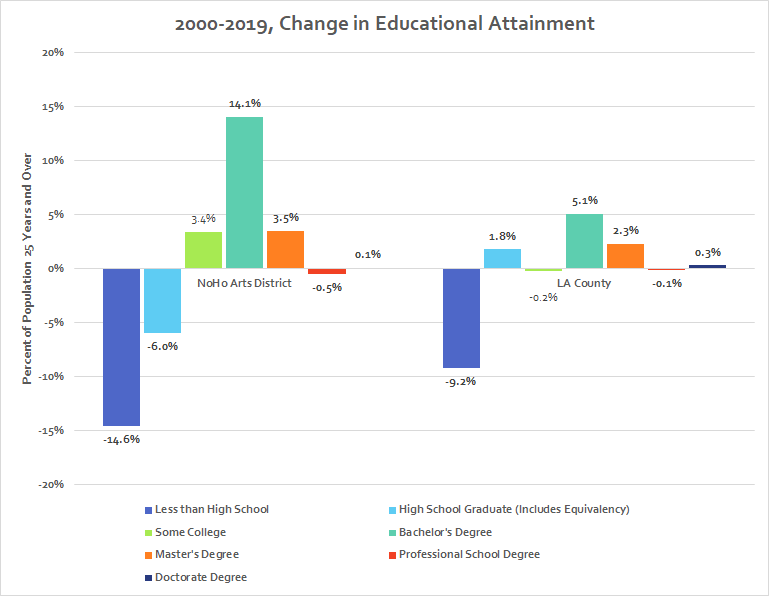
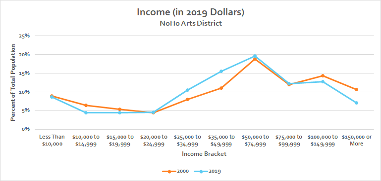

Transit Oriented Development and Gentrification in the NoHo Arts District, From 2000 to 2019
North Hollywood has always been a creative melting pot for artists of all backgrounds. Many of the world's most famous albums were recorded here, such as Metallica's Black Album. Artists from other countries want a part of what makes North Hollywood special, such as Yoshiki Hayashi of X Japan; K-pop stars train at Millennium Dance Complex, to emulate Britney Spears and other popstars who trained there. Modern celebrities had their start here, such as Doja Cat and Jeffree Star. When asked if Hetfield (co-founder of Metallica) liked recording in North Hollywood, he responded with, "No, it's too easy to have fun here." (Clough, Craig-Recorded in NoHo: Metallica's Black Album, 2011) Now, things are changing. Millennium Dance Complex was forced to move to Studio City as its former space was transformed into a mixed-use development. This has become a recurring theme in North Hollywood. People and businesses, North Hollywood's culture and history, are being displaced and replaced with bland and unsustainable developments.
"Transit Oriented Development is the exciting fast growing trend in creating vibrant, livable, sustainable communities. Also known as TOD, it's the creation of compact, walkable, pedestrian-oriented, mixed-use communities centered around high quality train systems. This makes it possible to live a lower-stress life without complete dependence on a car for mobility and survival.
Transit oriented development is regional planning, city revitalization, suburban renewal, and walkable neighborhoods combined. TOD is rapidly sweeping the nation with the creation of exciting people places in city after city. The public has embraced the concept across the nation as the most desirable places to live, work, and play. Real estate developers have quickly followed to meet the high demand for quality urban places served by rail systems.
Transit oriented development is also a major solution to the serious and growing problems of climate change and global energy security by creating dense, walkable communities that greatly reduce the need for driving and energy consumption. This type of living arrangement can reduce driving by up to 85%." (Transit Oriented Development Institute)
Transit oriented development and real estate developers are strongly associated; so much so that the governing body responsible for TOD in the US highlights them in their definition, in a commending fashion. They claim that TOD can reduce driving by "up to" 85%, but how much has it reduced driving in the NoHo Arts District? Judging by the map below, not much! An overwhelming majority of workers still commute by car.
North Hollywood Station opened in 2000, with bus terminals, and a Red Line (subway) stretching to Union Station. In 2005, the Orange Line opened, which provided a busway that connects North Hollywood to the rest of the valley. This solidified North Hollywood as the transit hub of the San Ferando Valley. Below is a visual representation of the Red and Orange lines, with North Hollywood as the connector.

Source: (Metro Rail & Busway Map, 2020)

Source: (Padeiro, Miguel-Transit-Oriented Development and Gentrification: A Systematic Review, 2019)
This frequency chart was derived from "a systematic review of 35 quantitative research-based studies presenting evidence on gentrification outcomes resulting from transit-based interventions." (Padeiro, Miguel-Transit-Oriented Development and Gentrification: A Systematic Review, 2019) We use this as a basis for the importance of topics when studying our area of interest. For our story map, we define gentrification as "a process of neighborhood change that includes economic change in a historically disinvested neighborhood – by means of real estate investment and new higher-income residents moving in – as well as demographic change – not only in terms of income level, but also in terms of changes in the education level or racial make-up of residents.” (Urban Displacement Project-Gentrification Explained, 2017)
Gentrification occurred in the NoHo Arts District after the opening of North Hollywood Station; we seek to highlight how this affected the NoHo Arts District and its residents, both past and present. The NoHo Arts District is composed of six census tracts: 1253.10, 1253.20, 1254.01, 1255.01, 1254.02 and 1255.02. We hope our findings lead to policies that curtail displacement and the affordability crisis in areas penetrated by transit oriented development.
Sources: LA Metro GIS Data. (Pudlin, Alex-Los Angeles Index of Displacement Pressure, 2019).
Above is a mapped index of displacement pressure, composed of seven variables: distance to current rails stations (within a half mile radius), distance to rail stations under construction, or recently opened in 2016 (within a half mile radius), distance to closest “top tier” neighborhood, as defined by the Los Angeles Index of Neighborhood Change (within a one mile radius), change in housing price projections from 2015 to 2020, percent of households that rent, percent of households that are extremely rent burdened (spend >=50% of household income on rent), and the number of affordable properties and housing units that are due to expire by 2023. (Pudlin, Alex-Los Angeles Index of Displacement Pressure, 2019) The result is an index of displacement pressure for 2016. There’s an extremely strong association between transit oriented development and displacement pressure, as all of the stations along the Red Line (except Studio City, which is an outlier) have very high displacement pressure scores. Displacement is often glossed over by city officials and ignored by developers, despite being a horrible and unacceptable reality. This is what it looks like in the rare case when residents try to stand together. Most often, residents silently disappear after losing a court battle against an unlawful eviction, as they're too busy facing the sudden burden of homelesness.

Source: (Chou, Elizabeth-North Hollywood Apartment Dwellers Band Together to Stop Rent Hikes, Demand Repairs, 2019).
Sources: LA Metro GIS Data. (Pudlin, Alex-Los Angeles Index of Neighborhood Change, 2016).
Above is a mapped index of neighborhood change, composed of six variables: percent change in low/high IRS filer ratio, change in percent of residents 25 years or older with bachelor’s degrees or higher, change in percent of White, non-Hispanic/Latino residents, percent change in median household income, percent change in median gross rent, and percent change in average household size. (Pudlin, Alex-Los Angeles Index of Neighborhood Change, 2016) The result is an index of neighborhood change between 2000 and 2014. This was one of the variables used to calculate displacement pressure. As seen on the map, North Hollywood (and every station along the Red Line, sans Study City) have experienced a large amount of change between 2000 and 2014. Let's investigate some of these changes!

Source: Social Explorer, 2000 Decennial Census (T12 and T13) and 2019 ACS 5-Year Estimate (A03001 and A04001).
Across the NoHo Arts District, Hispanics and Latinos were replaced by Whites and Asians.

Source: Social Explorer, 2000 Decennial Census (T12 and T13) and 2019 ACS 5-Year Estimate (A03001 and A04001).
The gentrification and displacement are clearer when we look at specific sections of the NoHo Arts District, by census tract. 1253.20 and 1253.10 saw massive displacement of the Hispanic and Latino community, who were replaced by Whites and Asians. Overall, there was an increase of Whites and Asians in every tract, and a decrease of Hispanics and Latinos.

Source: Social Explorer, 2000 Decennial Census (T38) and 2019 ACS 5-Year Estimate (A12001).
The NoHo Arts District has gained many more college graduates than is the norm for LA County, which is another indicator of gentrification.

Source: Social Explorer, 2000 Decennial Census (T90) and 2019 ACS 5-Year Estimate (A14001).
Despite the changes in race/ethnicity and educational attainment, incomes have stayed the same. This is probably due to the wage stagnation crisis of working Americans. But this begs the question, why were the previous residents displaced if their incomes have the same distribution?
Sources: Social Explorer, 2000 Decennial Census (T167 and T91) and 2019 ACS 5-Year Estimate (A14016 and A18005). LA Metro GIS Data. (Pudlin, Alex-Los Angeles Index of Displacement Pressure, 2019).
The map above shows the decrease in affordability between 2000 and 2019. Affordability was calculated with the following equation: (((2019 Average Gross Rent * 12) / 2019 Median Household Income in the Past 12 Months) - ((2000 Average Gross Rent * 12) / 2000 Median Household Income)) * 100. All values were in 2021 dollars before calculation. Since 2000, affordability has decreased almost 20% in areas of the NoHo Arts District surrounding NoHo Station. We also included layers that highlight the intersection of the NoHo Arts District as a community plan area, state enterprise zone and business improvement district to show that it’s the product of great state, local and private intervention.
This map further highlights the affordability crisis created in the NoHo Arts District. There have been massive increases in people spending 50% or more, and 30% to 49%, of their income on rent. How does one save for the future if they have to spend all of their money just to survive one more month? Why did state and local governments support these developments? The overall affordability crisis and damage to the local economy far outweigh any low income units that were created.
The above comparison shows a massive increase of housing units in buildings of 50 or more, between 2000 and 2019. The three tracts surrounding, and including, NoHo Station had massive increases in comparison to the surrounding area: 1253.10 had a 44.45% increase alone, followed by a 26.03% increase in 1254.01, 21.51% increase in 1253.20, and 12.84% increase in 1255.01. The influx of new units and techniques used by landlords to squeeze rents caused contract rents to skyrocket in the NoHo Arts District, while income stagnated. The only thing supporting this fabricated rental economy is a steady flow of new "comps" being built, which prevent rents in buildings that were recently new, but now poorly maintained, from plummeting.
"“This case pulled back the curtain on rampant corruption at City Hall,” said United States Attorney Nick Hanna. “Councilman Huizar violated the public trust to a staggering degree, allegedly soliciting and accepting hundreds of thousands of dollars in bribes from multiple sources over many years. Using the power of his office to approve or stall large building projects, Huizar worked through a web of other corrupt city officials, lobbyists, consultants and developers to line his pockets and maintain his hold on Council District 14, which he turned into a money-making criminal enterprise that shaped the development landscape in Los Angeles.”
“The federal investigation has revealed that Huizar operated a pay-to-play scheme in the City, utilizing and commodifying the powerful Council seat of CD-14, whereby he solicited and accepted financial benefits from international (primarily Chinese) and domestic developers with projects in the City in exchange for favorable official actions,” according to the affidavit in support of the criminal complaint." (Department of Justice-Los Angeles City Councilman Jose Huizar Arrested on Federal Rico Charge That Alleges He Agreed to Accept at Least $1.5 Million in Illicit Benefits, 2020)
If this scale of corruption is occurring in the most important area of Los Angeles (DTLA), what's happening in the rest of the county? How are private citizens expected to survive when state and local governments collude with real estate developers to enrich themselves, at the expense of the communities they’re supposed to protect and serve? Only a few representatives were caught. How many more continue to harm local communities? Our guess is many. Why is this all being done? Who benefits from this? Not the residents and small business owners of the NoHo Arts District, that’s for sure. Maybe that's why they open so many bars; it seems typical to drink away your sorrows when one must attain a higher education just to become a rent slave, unable to save enough money to escape the cycle.
"“Right now it’s scary what’s happening,” Storiale said. “It would be a joke to be an arts district with no art. We don’t want to be called the NoHo bar district.”" (Grigoryants, Olga-As Developments Rise in the Noho Arts District, Artists Are Being Forced Out by High Rents, 2018)
 (Vincent, Roger-$1-Billion Plan for North Hollywood Station Takes Shape, 2019)
And despite all of the negative effects of transit oriented development, city officials and developers are still set on going full steam ahead with a billion dollar development of the area surrounding NoHo Station, while referencing attractions (dance studios) that have since been displaced. (Vincent, Roger-$1-Billion Plan for North Hollywood Station Takes Shape, 2019)
(Vincent, Roger-$1-Billion Plan for North Hollywood Station Takes Shape, 2019)
And despite all of the negative effects of transit oriented development, city officials and developers are still set on going full steam ahead with a billion dollar development of the area surrounding NoHo Station, while referencing attractions (dance studios) that have since been displaced. (Vincent, Roger-$1-Billion Plan for North Hollywood Station Takes Shape, 2019)